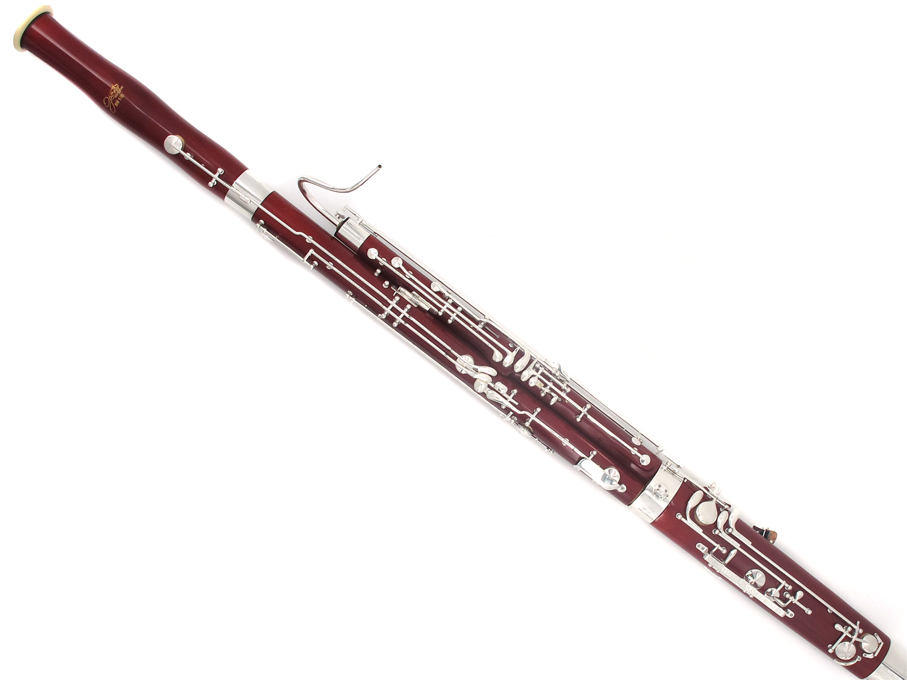

Fagotto
Il fagotto è uno strumento musicale a fiato ad ancia doppia, le cui ance, due pezzi di canna comune lavorati e legati tra di loro, sono posizionati uno sopra l’altro. Il fagotto appartiene al gruppo dei legni. Il nome fagotto deriva dalla forma che esso aveva in origine, simile a quella di un mantice a soffietto che immetteva l'aria in due tubi affiancati. Il musicista che lo suona è detto fagottista. È composto da un tubo conico lungo circa 2,60 m ripiegato su sé stesso a forma di "U" e ricavato in tre diversi segmenti e un padiglione, da altrettanti masselli di legno (pero, acero, palissandro, ebano e altri): i segmenti esterni sono innestati su quello mediano, detto "piede" o "stivale", costituito da un blocco a sezione ovale nel quale sono ricavati due tratti di tubo paralleli, uno ascendente e l'altro discendente, congiunti da un accordo a gomito (culatta) all'estremità inferiore. Ha l'imboccatura ad ancia doppia e un sistema di chiavi e 5 fori. L'ancia è inserita su un cannello metallico ritorto innestato nel segmento iniziale chiamato "esse". I fori sono scavati con andamento obliquo, in modo da raggiungere la colonna d'aria contenuta nel tubo in punti tra loro più distanziati di quanto non siano le aperture esterne, adeguate all'estensione delle dita di una mano. Del fagotto esiste inoltre una versione il cui canneggio è lungo il doppio, in modo da produrre suoni più bassi di un'ottava; questo strumento si chiama controfagotto.
